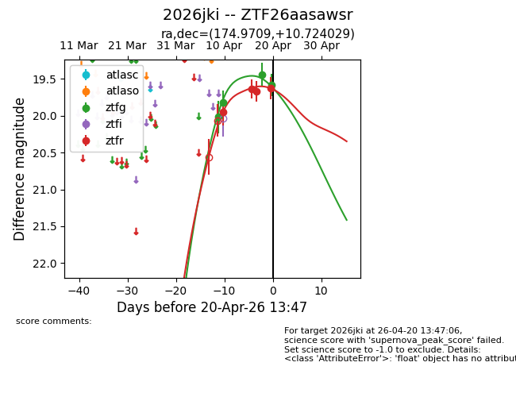
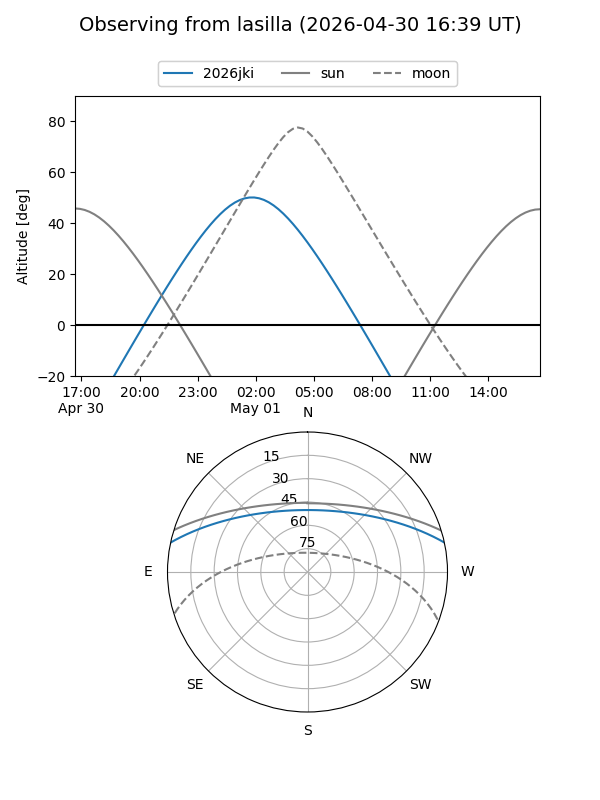
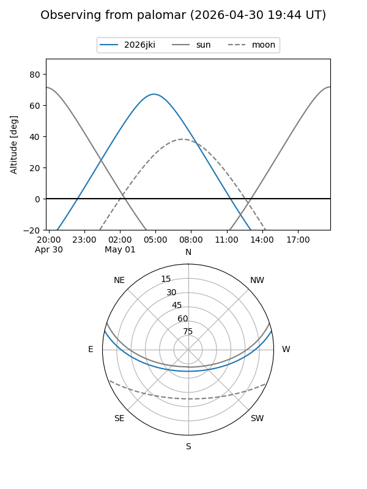
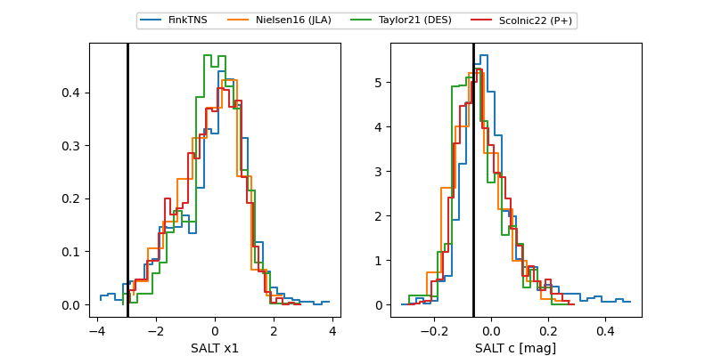

2026jki
Target 2026jki at 2026-04-20 13:59
Aliases and brokers:
FINK: link
Lasair: link
ALeRCE: link
TNS: link
YSE: link
alt names
ZTF26aasawsr (ztf,fink_ztf)
2026jki (tns,yse)
Coordinates:
equatorial (ra, dec) = 174.9709,+10.72403
equatorial (HMS+DMS) = 11:39:53.02,+10:43:26.50
galactic (l, b) = (253.7585,+66.49407)
Flags:
Photometry:
last ztfg=19.59, ztfr=19.63
4 ztfg, 4 ztfr detections
Lightcurve

Visibility


Additional plots
